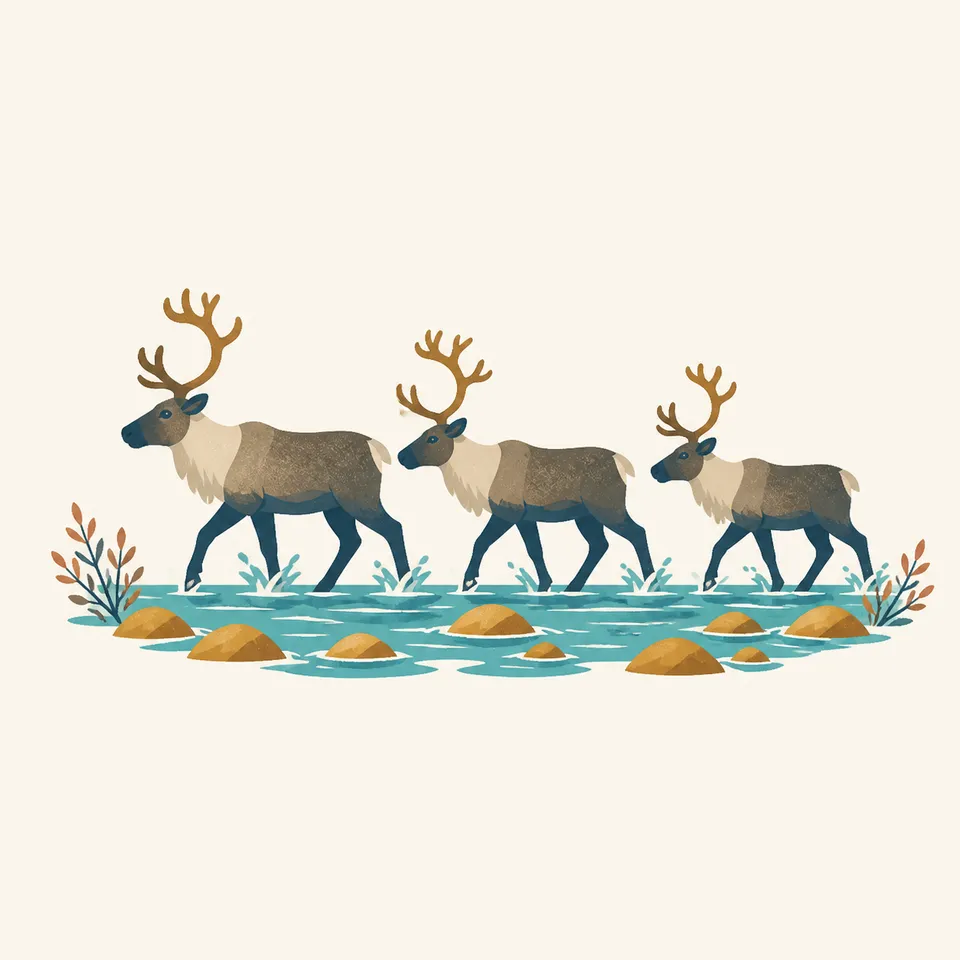
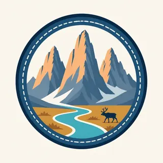

01
The gates
Frigid Crags and Boreal Mountain are the pair Marshall named. The painting's spires are that kind of Brooks Range wall. They are not a claim that the header is a portrait of those two summits.
TrailMark Archive Edition
Alaska | Brooks Range
No roads and no trails. Established December 2, 1980, to hold 8.4 million acres of the central Brooks Range.
Archive No. TM-GAAR-037
National Park since 1980
Collection Central Brooks Range
Park Overview
Gates of the Arctic National Park and Preserve was established on December 2, 1980, under the Alaska National Interest Lands Conservation Act.
The park's own explainer says the 1980 law protected 8.4 million acres, to be managed for wild and undeveloped character, solitude, and wilderness recreation. Sport hunting and trapping are allowed in the preserve and not in the park. That is the line between the two words in the name.
The same page says about 7,052,000 acres were designated wilderness, later adjusted to about 7,154,000. Six wild and scenic rivers were named, among them the Alatna, the John, and the Kobuk. The homepage says the landscape contains no roads or trails.
Emotional Thesis
The header is a river, a few spruce, sharp peaks, and a small band of caribou. There is no road to crop out. The creation page traces the idea to Robert Marshall, who came up the North Fork of the Koyukuk in 1929 looking for blank spaces, and who named Frigid Crags and Boreal Mountain the Gates of the Arctic.
The basic-information page says you are on your own. That is the number-one message. Backpackers on the explainer often make about five miles a day. A Lower 48 itinerary does not fit.
Landscape Highlights
01
Frigid Crags and Boreal Mountain are the pair Marshall named. The painting's spires are that kind of Brooks Range wall. They are not a claim that the header is a portrait of those two summits.
02
The Alatna, the John, and the Kobuk are three of the six wild and scenic rivers on the explainer page. Floaters use the valleys. Hikers use them as corridors over passes. There is still no trail.
03
Inside the park, sport hunting is not the tool. Inside the preserve, it is. The caribou in the drawing cross water without a sign that says which side of that line they are on. You need the map.
Wildlife
The homepage says caribou migrate along age-old trails. The extra drawing is three animals crossing a rocky river. It is not a herd count.

01
The basic-information page says the park protects a whole arctic mountain ecosystem and habitat of world importance. It does not hand this essay a population number.
02
Sport hunting in the preserve is legal under the difference the explainer draws. It is not a suggestion from this archive.
03
Subsistence by local rural residents is an ANILCA fact. Visitors are not subsistence hunters by arriving.
Geology
The homepage describes wild rivers through glacier-carved valleys. Marshall was mapping uncharted waterways to the divide in the 1930s.
01
No summit elevation is added. The pages used here argue by acreage and by the absence of roads.
02
The six rivers head in this country. The Alatna, John, and Kobuk are the three named in full on the explainer extract this essay relies on.
03
The peaks in the header are the kind of wall that makes five miles a reasonable day.
Most visits are summer and fall, when small planes and boats are the travel. The hours page says so. Endless light is the homepage's phrase.
Skis and snowmobiles are allowed when there is enough snow. Conditions can be extreme. The same page says preparation is essential.
The explainer's caution is not to squeeze a 21-day arctic trip into 14 Lower 48 days. The river walking is slow on purpose.
The homepage names aurora-lit winter nights. Getting there in that season is the hours page's warning, not a tour.
Photography
A Brooks Range picture with a highway is a different Alaska. This park's homepage leads with the absence.
01
A river and a few trees keep the peaks from looking like a model. The header does this.
02
Three animals in the drawing are a composition. A real migration is an event you do not block.
03
The basic-information page says you are on your own. A photograph is not a reason to split the group.
Field Notes
Marshall wanted blank spaces on the map. The 1980 law is those spaces, kept blank on purpose.
TrailMark Field Notes

Badge Story
The mark is the gates: a pair of summits and empty country. A scenic byway would cancel the point.
Spire ridge, river, small spruce.
Caribou can be the animal. Three in a drawing are not a herd estimate.
Do not reuse Denali's single gravel road. This park does not have one.
Archive No.037
LocationBrooks Range
ReleaseGates Mark
Stewardship / Safety
The basic-information page says that sentence first. A backcountry orientation is highly recommended at the visitor centers outside the park. Anaktuvuk Pass has the only staffed station inside the boundary.
There is no trail to lose. There is also no trail to follow. River corridors are the usual line, and they flood.
Sport hunting belongs to the preserve, under Alaska rules. Know which map polygon you are in.
Resident-zone subsistence is not visitor hunting. Read ANILCA before you invent a right.
Winter snowmobile use depends on snow. The hours page is the source, not this essay.
Current conditions, fees, and alerts are on the National Park Service site.
Continue the Archive
Kobuk Valley and Noatak are still unpublished here. Denali and Glacier Bay, in this batch, are the other Alaska chapters.